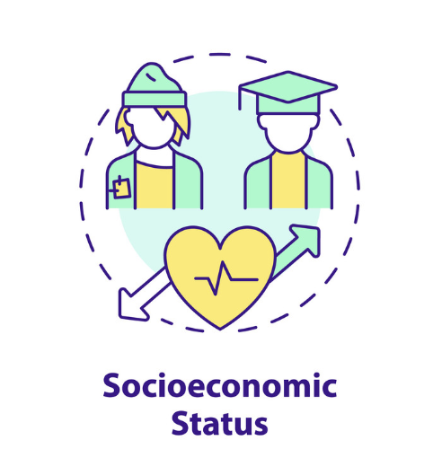
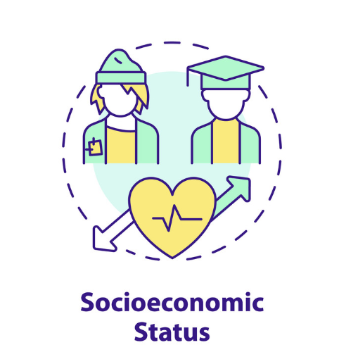
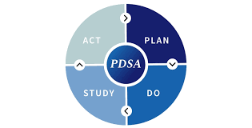
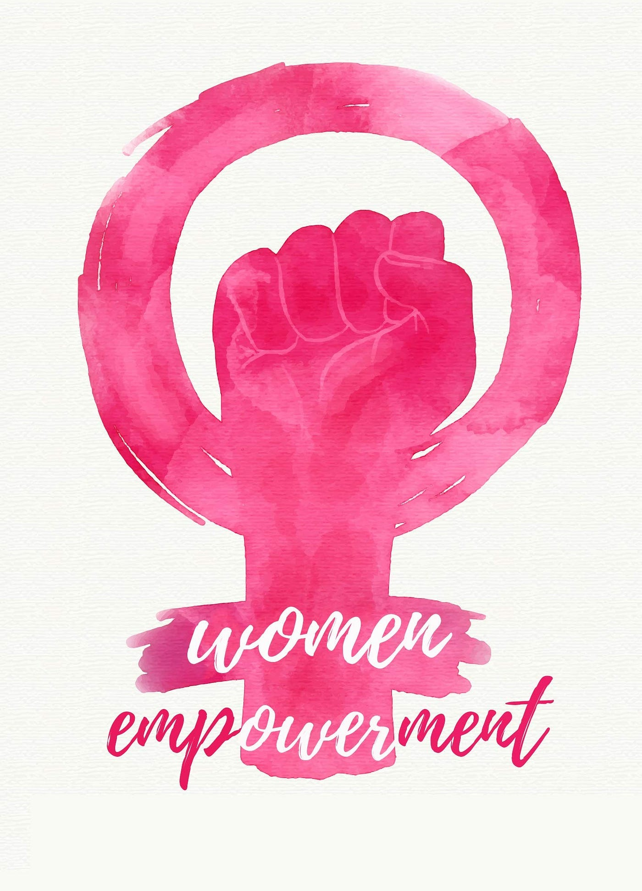
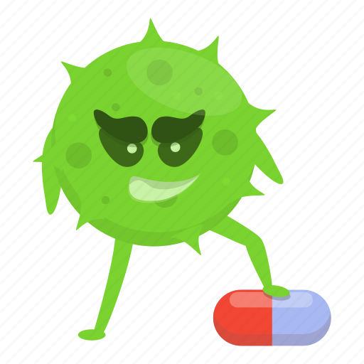

Updation of B G Prasad scale
The B G Prasad scale for assessing the socioeconomic status of families is based on the per capita income of the family, and the values needs to be updated regularly to adjust for inflation.
Read More The B G Prasad scale for assessing the socioeconomic status of families is based on the per capita income of the family, and the values needs to be updated regularly to adjust for inflation.
Read More This article reviews the national suicide prevention strategy of India.
Read More
A cross-sectional study was conducted in an urban area of delhi to study the prevalnece of anxiety among adolescents
Read MoreA quality improvement project was carried out to evaluate and improve the prescription writing practices among medical interns. A baseline survey was done, and following root cause analysis, interventions were planned and through repeated PDSA cycles these were carried out. The outcomes were reassessed to study the progress.
Read More As a part of my postgraduate thesis project, a cross sectional study was carried out among married women of delhi to study their empowerment and mental health status. The various sociodemographic and economic factors influencing women empowerment and mental health status were studied, also the association between the both were also studied.
Read More A descriptive cross-sectional study was cnducted in an urban area of Delhi. In this study nearly 43,000 residents in the study area were screened for the need for homebased palliative care by the field research workers. After the initial screening, trained physicians did an in depth survey and screening to identify the need for Home based palliative care in the study population.
Read MoreThis mixed-methods study conducted at a public tertiary hospital in Delhi assessed financial toxicity (FT) among 116 oral cancer patients, revealing that despite free treatment, 92.2% experienced FT, driven by indirect costs and socioeconomic vulnerabilities.
Read MoreThe recent COVID-19 pandemic saw the widespread and irrational use of antibiotics on a large scale. In this review on AMR we have compared the burden and impact of AMR in terms of morbidity, mortality and expenditure. Multiple strategies and action plans have been laid out by global leaders, and also in India to tackle the pervasive issue of AMR, which has also been outlined.
Read More Most studies of financial toxicity in cancer care are conducted among adults in high-income countries and measure material domains. Greater attention is needed to expand financial toxicity research in low- and middle-income countries and among pediatric, adolescent, and caregiver populations.
Read More